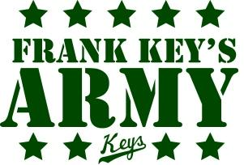

Wednesday, April the 20th, 2011
back to: title, date or indexes
At last, a proper job! It is with some pride that I announce my adoption by an American baseball team as their mascot. According to the Baltimore Orioles, I am “a family friendly character”, and apparently I was unveiled just last week, though I must admit I don't recall the event. Perhaps I was taking a nap at the time.
Particularly exciting is that I have been given my own army, known as “Frank Key's Army”. I think I shall lead them on manoeuvres in the near future, though rather than deploying them to one of the world's trouble spots it might be more satisfying to set them, armed to the teeth, upon defenceless persons I abhor. Luckily, I do not detest quite so many people as Percy Grainger did, so the world is (relatively) safe in my hands.
Of course, becoming a deeply adored mascot would cause a swimming in the head for an unstable or partly deranged person, so I will be careful to keep a proper perspective. Now I must go and drill the troops and issue them with their blunderbusses, muskets, and surface-to-air missiles.
